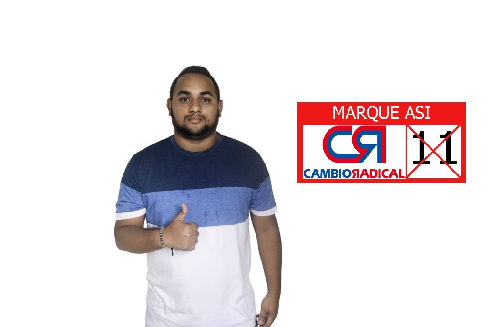

Anatolia Aguirre Galvis
Marisol Prisco Jaramillo
Henry de Jesus Gaviria Ospina
Maria Lorena Sierra Moreno
Nelson de Jesús Vallejo Alvarez
Judy Paola Ramirez Barrientos
Cristian Fernando Velasquez Mesa
Luis Fernando Zorrilla Villa
Ronal Andres Aguinaga Morales

Gilmar Alexander Duque Jaramillo
Cesar Augusto Mendez Tobon
Lista Cerrada Colombia Justa Libres